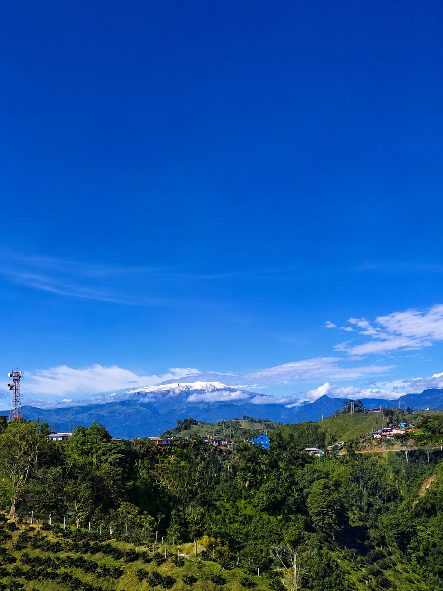
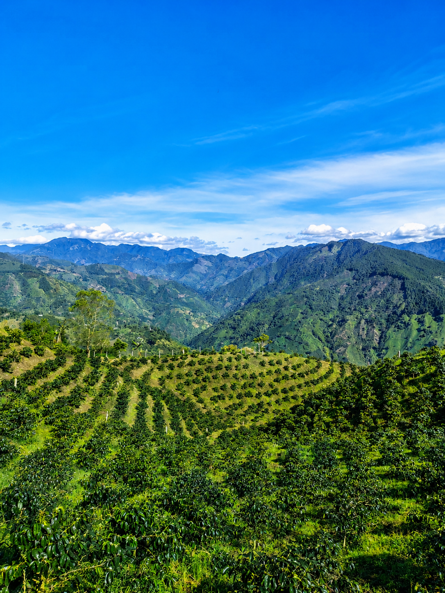
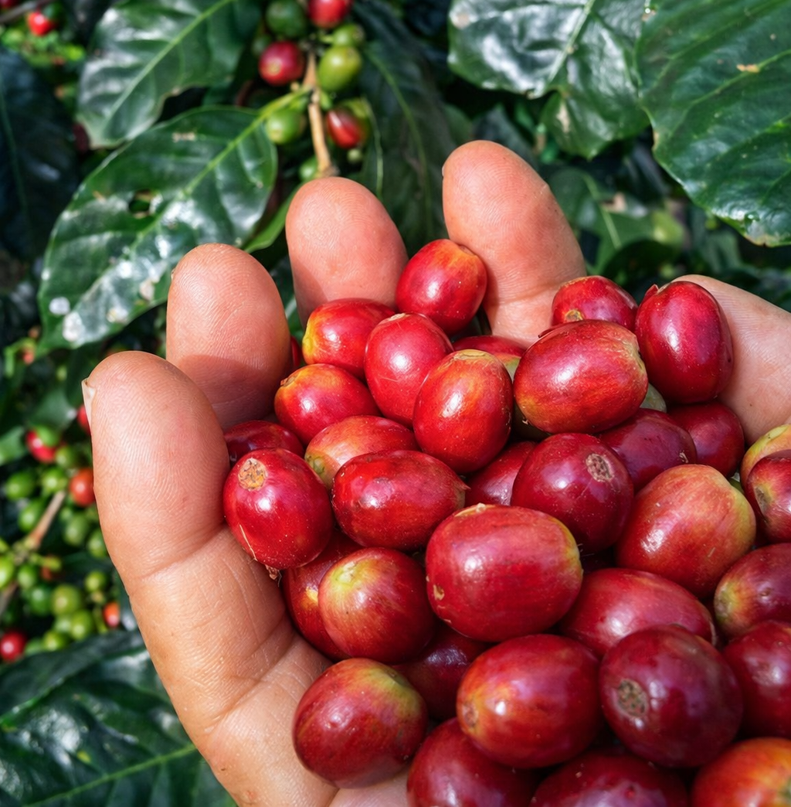
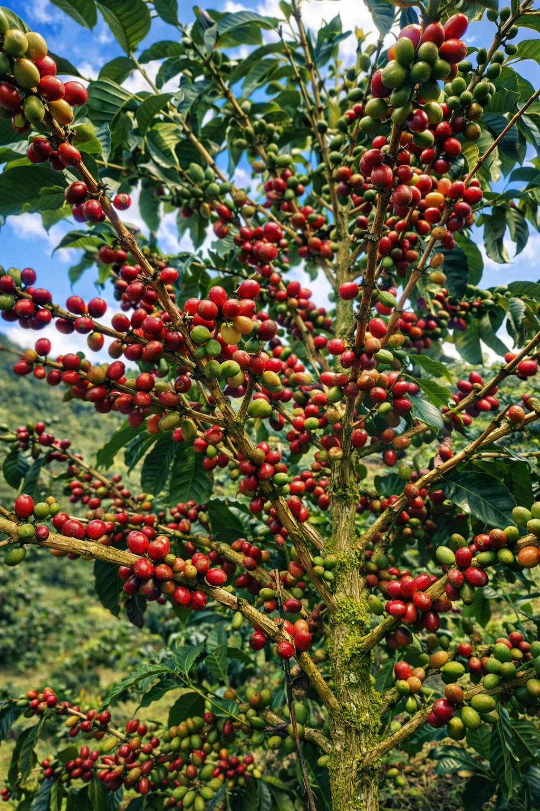
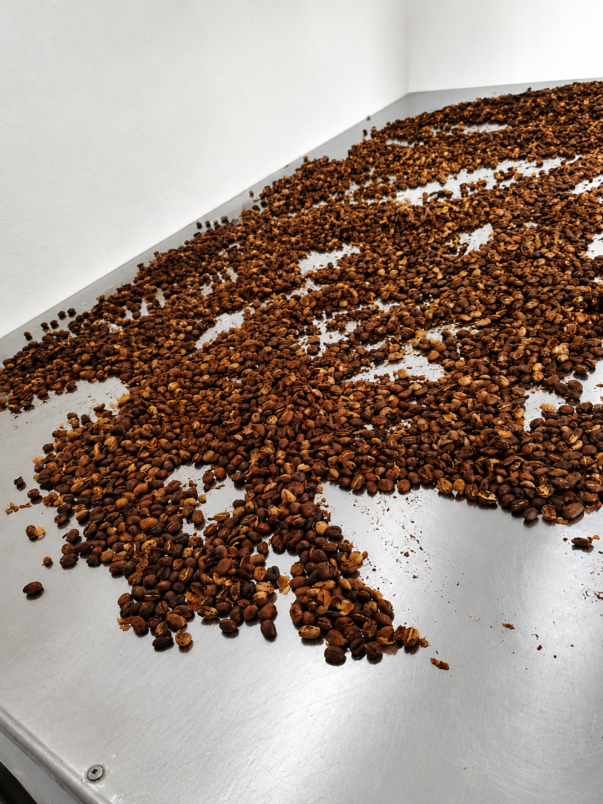
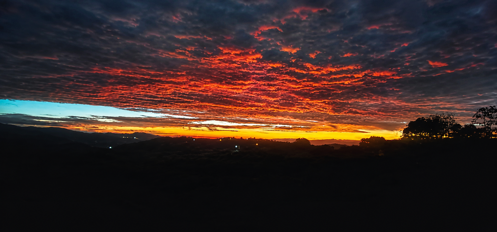
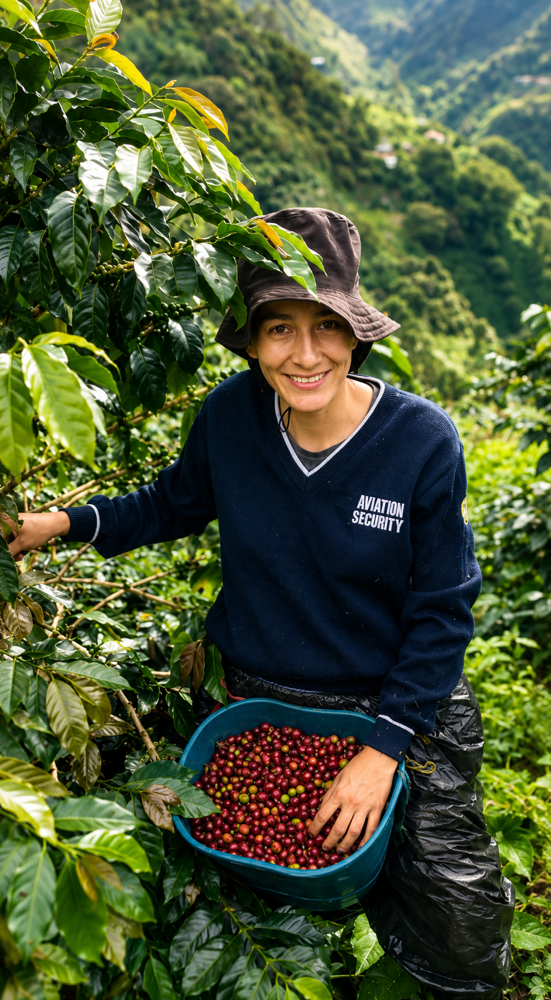

Nuestra historia
"El café no se fabrica, se cuida. Con amor y respeto por la tierra."
Nacimos en las montañas del norte del tolima frente al nevado del Ruiz . No somos una fábrica, somos una finca familiar. Honramos la memoria del suelo y el conocimiento heredado para llevar hasta tu taza un café extraordinario, cultivado a mano y tostado con pasión.

Nuestra filosofía
Seis pilares guían cada decisión que tomamos, desde la semilla en la tierra hasta la taza en tus manos.
Cultivado en las altas montañas del Tolima.
Técnicas agrícolas que respetan la naturaleza.
Cosecha y tueste intencional, en pequeños lotes.
Prácticas regenerativas que cuidan la tierra.
Embajadores del mejor café del mundo.
Selección rigurosa para un sabor extraordinario.

"El sabor de la montaña en cada sorbo"
El viaje del grano
Detrás de cada taza de Café Ancestral hay un camino de meses, de manos expertas y de amor por el detalle.

Paso 01
Suelo rico y un microclima andino perfecto a más de 1.700 metros.

Paso 02
Nuestros recolectores escogen meticulosamente solo los cerezos maduros.

Paso 03
Usamos café lavado con un plazo maximo de fermentacion de 12 horas.

Paso 04
Lento secado natural que preserva todos los compuestos aromáticos.

Paso 05
Tostado en lotes pequeños, con perfiles personalizados para resaltar su esencia.

Ubicado en el corazón de los Andes colombianos, la geografía del Tolima y el majestuoso Nevado brindan un microclima excepcional para granos complejos y únicos.
Nuestros cafés



La experiencia
Cerrar los ojos y sostener una taza de Café Ancestral es transportarse.
Un equilibrio perfecto entre acidez y dulzura, donde cada sorbo cuenta una historia de montañas, paciencia y tradición familiar.
contamos con variedades como
Galería visual


Café de origen · Tolima · Colombia
Cada pedido es una conexión directa con nuestra finca. Fresco, artesanal, lleno de historia.